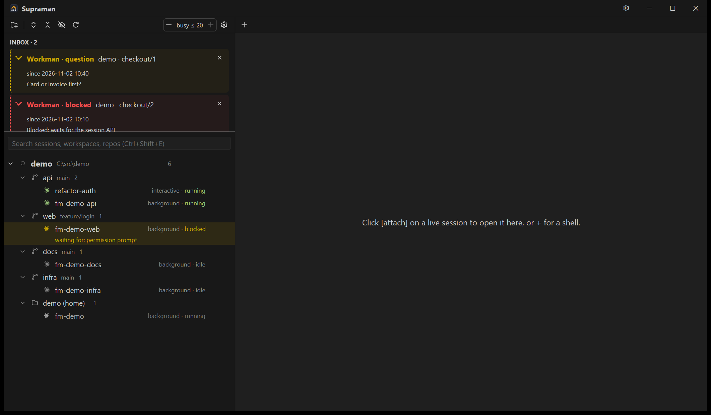
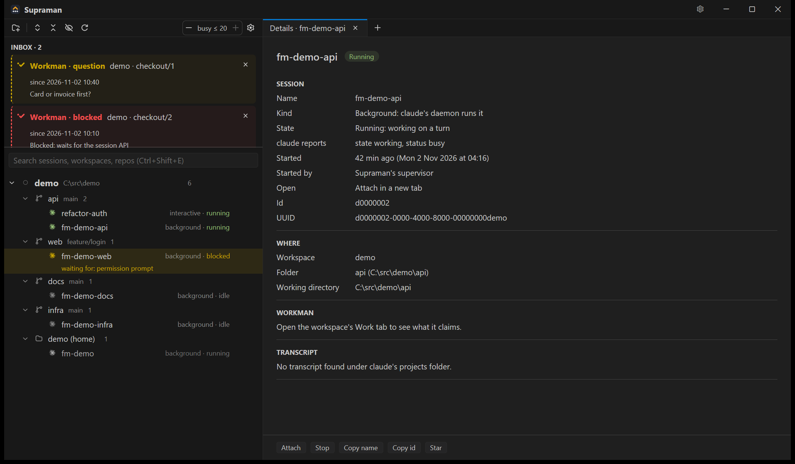

Terminal tabs that come back
Attach to any session in a tab, or press + for a new shell and start claude in it. When Supraman restarts, your tabs reopen as resumes, exactly where they were.


Supraman 0.1 · Windows 10/11 · GPL-3.0
Supraman runs above Claude Code. It finds every session on your machine, keeps the ones you want running, brings them back after a reboot and tells you which ones need you. It doesn't replace the agent. It makes running ten of them feel like running one.

See everything
Supraman lists every Claude Code session on the machine, background and interactive, including the ones you started somewhere else. They are grouped by workspace, repo and worktree, each with a live state: running, idle, blocked or stopped.

Never lose a session
Attach to any session in a tab, or press + for a new shell and start claude in it. When Supraman restarts, your tabs reopen as resumes, exactly where they were.
A workspace says which sessions it wants running. Supraman launches them in the background, resumes one that stopped and reports one that fails to start. A cap (busy ≤ 20) limits how many work at once.
A permission prompt, a question from a session, a failed launch, a failed scheduled run, a Workman item blocked on you. You see it all in one place instead of hunting through terminals.
Supraman checks GitHub Releases, verifies each update against a signed manifest (ed25519), swaps itself in and restarts. Your sessions keep running in the background meanwhile.
Loop engineering
Cloud routines can't see your repo's .env, your Docker or your local tools. Supraman's schedules run right here: a slash command or a prompt, on a timer, in the right folder.
# every weekday morning, read-only
sm schedule add --id triage --name "Triage failures" \
--every 'weekly mon,tue,wed,thu,fri 07:00' \
--command /replay-failures \
--profile read --max-runtime 30m
sm schedule dry-run triage
# → the prompt, the claude argv, the next 3 fires
# → pending until you click ApproveSessions that cooperate
With a dozen sessions open, getting one to talk to another starts with guessing its real name. Supraman shows every session's name, and the sessions it launches follow one pattern: fm-<workspace>-<repo>.
sm send.sm tell puts its message in front of you.sm roster shop
# each session's name, role, health, id and cwd
sm send shop fm-shop-web "API v2 is merged, rebase."
# sent direct
# inside a session:
sm tell "Migration done, 412 tests pass."Better with Workman
Sign in to Workman once, in Settings. Every session Supraman launches then gets its own Workman identity, so plans, claims and evidence are recorded per session.
Built native
The command line
sm: everything the window does, from a shellHandy for scripts, and for the sessions themselves.
sm workspace add <dir> # a folder of repos becomes a workspace
sm sessions [--workspace <w>] # every session, with its state
sm want <workspace> <repo> # keep the repo's session running
sm roster <workspace> # names, roles, health, cwd
sm send <workspace> <to> <body> # message a session by name
sm tell <body> # from a session: a message to you
sm schedule add|list|dry-run # recurring work, approved in the window
sm work overview <workspace> # the workspace's Workman projectC:\Tools\supraman. There's no installer. The exe isn't code-signed yet, so SmartScreen may ask once.supraman.exe.Needs the Claude Code CLI 2.1.308 or newer on your PATH, and PowerShell 7 for terminal tabs. Supraman keeps its state in %APPDATA%\Supraman.
claude, or attach to one in the tree. Sessions you start elsewhere show up too.Coming next: Gitman and Fileman, then macOS and Linux. See the roadmap.
Source on GitHub